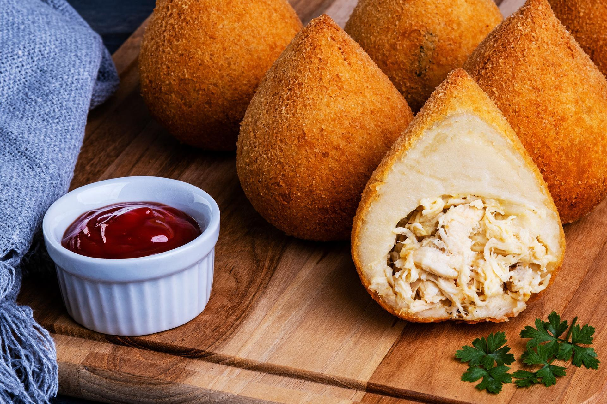
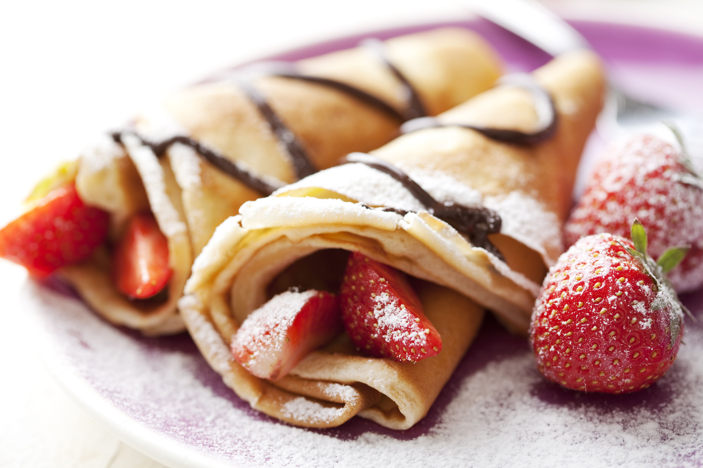

Culinária Francesa no Brasil
A culinária francesa influencia o Brasil principalmente pelas técnicas refinadas e pela valorização da apresentação dos pratos. Desde o período imperial, chefs franceses trouxeram sofisticação à gastronomia brasileira, e hoje vemos essa herança em confeitarias, restaurantes e escolas de culinária. Pratos como quiches, mousses e éclairs foram adaptados com ingredientes locais, criando uma fusão elegante entre tradição europeia e sabor brasileiro.
Vamos conhecer algumas comidas brasileiras influenciadas pela França:
Coxinha

A coxinha tem origem inspirada na culinária francesa, especialmente num prato chamado coxa-creme, feito com frango empanado. No Brasil, ela foi reinventada: em vez da coxa inteira, usava-se frango desfiado moldado em forma de gota, empanado e frito. Essa adaptação surgiu como uma solução econômica e prática, ganhando popularidade nas fábricas e festas. Com o tempo, virou um ícone da comida de rua brasileira, com recheios variados e presença garantida em qualquer comemoração. Uma criação com toque francês, mas alma totalmente brasileira.
Crepe

O crepe surgiu na França e chegou ao Brasil com a influência da culinária europeia, especialmente francesa, no século XX. Primeiro apareceu em restaurantes sofisticados e depois foi adaptado ao gosto brasileiro, com recheios doces e salgados bem variados. Com o tempo, virou presença comum em festas, eventos e lanchonetes, ganhando versões criativas e populares.
Bomba de Chocolate
A bomba de chocolate, originalmente chamada éclair na França, chegou ao Brasil como um doce refinado de confeitaria. Aqui, ganhou o nome “bomba” por causa do recheio cremoso que explode na boca. Com o tempo, foi incorporada às padarias e confeitarias populares, recebendo recheios como doce de leite e brigadeiro, e se tornou um clássico acessível e querido no país